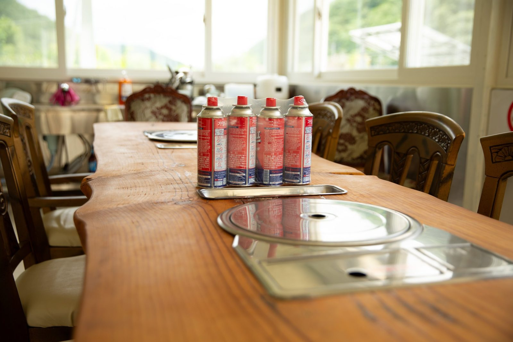
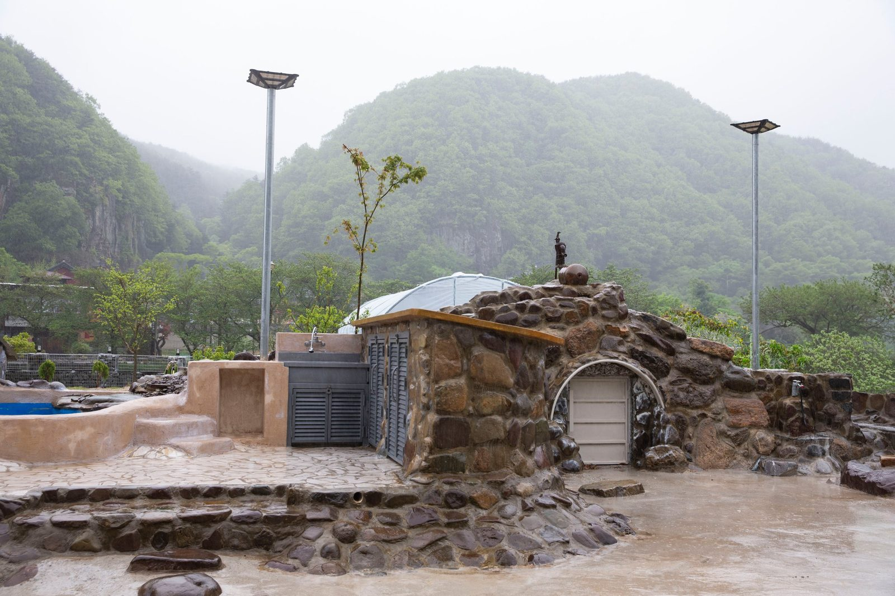
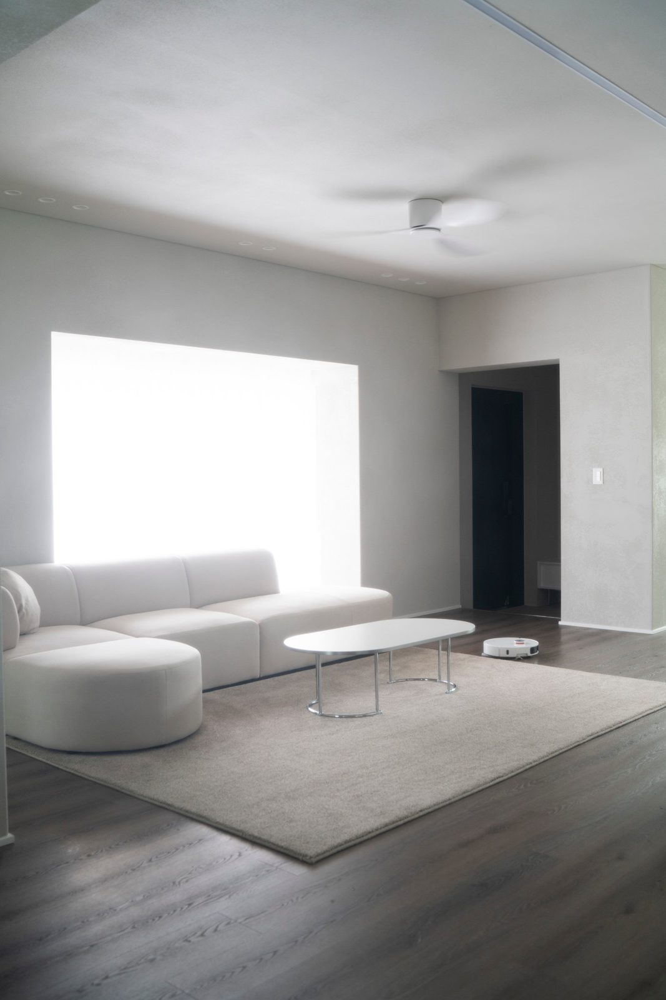

의령에서 멀리 오시는 가족을 위해 — 1,000평 안에 펜션을 독채로 열어 두었습니다
2026-10-17 발행
사진관을 하다 보면 안타까운 순간이 있습니다. 멀리서 오시는 가족이 아침 일찍 출발해서, 촬영이 끝나면 다시 몇 시간을 달려 돌아가십니다. 아이는 차에서 잠들고, 어르신은 허리를 두드리십니다. 좋은 날이었는데 마지막이 지치면 안 되는데, 그게 늘 마음에 걸렸습니다.
그래서 의령사진관 옆에 1,000평의 자리를 마련하고, 그 안에 김작가사진이야기펜션을 독채로 열어 두었습니다. 다른 손님과 마주치지 않고, 한 가족이 온전히 하루를 쓸 수 있는 집입니다.

펜션에 들어서면 거실이 먼저 나옵니다. 흰 소파와 낮은 테이블, 그 옆으로 원목 주방이 이어집니다. 낮에는 창으로 들어오는 빛이 방 전체를 밝히고, 저녁에는 조용합니다. 큰 창가에 앉아 있으면 바깥의 초록이 그대로 들어옵니다. 밤에 도착하신 가족이 짐을 풀고 앉을 자리가 여기에 있습니다.
마당 한쪽에는 바베큐 자리가 있습니다. 긴 원목 테이블에 불을 올리고, 가족이 둘러앉습니다. 창밖으로는 산이 보입니다. 사진 촬영이 끝난 저녁, 고기 굽는 냄새가 나면 아이들이 먼저 달려옵니다. 그때의 웃음소리가 저는 참 좋습니다. 사진은 낮에 찍지만, 그날의 기억은 저녁에 완성되는 것 같습니다.

아침이 되면 마당을 한 바퀴 걸어 보시길 권합니다. 의령의 아침은 조용합니다. 돌길을 따라 걷고, 나무 아래 의자에 앉아 계시다 보면, 어르신이 먼저 카메라 앞에 서십니다. 억지로 부르지 않아도 그렇게 됩니다. 그래서 저는 멀리서 오시는 가족께 하루를 비워 두고 오시라고 말씀드립니다.


칠순·팔순을 맞으신 부모님을 모시고 오시는 가족이라면 더 좋습니다. 오시는 길이 길수록, 그날 하루가 길어야 합니다. 서두르지 않고, 밥을 먹고, 마당을 걷고, 사진을 찍고, 저녁에 다시 둘러앉는 하루. 그 하루가 부모님께는 아마 오래 남는 선물이 될 것입니다.
멀리서 오시는 가족은 미리 말씀해 주시면 펜션과 촬영 일정을 함께 맞춰 드립니다. 오시는 길이 멀수록 준비를 더 꼼꼼히 해 두겠습니다.

자주 묻는 질문
Q. 창원에서 칠순 가족사진은 언제 예약하는 게 좋을까요?
A. 생신 날짜가 정해지면 한두 달 전에 미리 말씀해 주시는 것이 좋습니다. 부모님이 편한 시간대와 옷 준비까지 함께 맞출 수 있습니다.
Q. 부모님이 사진 찍는 것을 어색해하시는데 괜찮을까요?
A. 괜찮습니다. 촬영 전 김스카페에서 따뜻한 아메리카노 한 잔으로 긴장을 푸시고, 준비가 되면 천천히 시작합니다.
Q. 멀리서 가는데 하루에 다 할 수 있을까요?
A. 의령점은 1,000평 부지에 독채 펜션을 함께 운영하고 있어, 오시는 길이 먼 가족은 하루를 여유 있게 쓰실 수 있습니다.

오시는 곳
사랑이야기창원점
- 주소 경남 창원시 성산구 원이대로 652, 상남동 롯데빌딩 2층
- 전화 055-287-8022
- 영업시간 오전 10:00 ~ 오후 7:00
- 예약 전화 상담 · 카카오톡 채널
- 주차 건물 지하 주차장
김작가사진이야기 의령
- 주소 경남 의령군 궁류면 청정로 1188
- 전화 055-574-3706
- 영업시간 오전 10:00 ~ 오후 7:00
- 예약 전화 상담 · 카카오톡 채널
- 주차 전용 주차장
이 글에 한마디
댓글창을 준비하고 있습니다. 그동안 궁금한 점은 카카오채널로 남겨 주시면 바로 답변드립니다.
카카오채널로 한마디 남기기